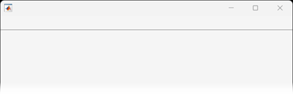
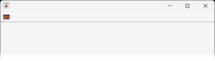

uitoolbar
Create toolbar in figure
Description
tb = uitoolbarToolbar object. If a figure created with
the figure function does not exist, then MATLAB® creates one to serve as the parent.
tb = uitoolbar(___,Name,Value)
Examples
Create a UI figure by calling the uifigure function. Add a
toolbar to the figure.
f = uifigure; tb = uitoolbar(f);

Create a push tool in the toolbar, and specify the toolbar icon as the image
pepper.png.
pt = uipushtool(tb,Icon="peppers.png");
Change the left-to-right order of tools in a toolbar. In this case, reverse the order of a push tool and toggle tool that are in a UI figure toolbar.
Create a UI figure. Add a toolbar to it. Then, add a push tool and toggle tool to the toolbar.
fig = uifigure; tb = uitoolbar(fig); pt = uipushtool(tb); tt = uitoggletool(tb);
Set the Icon property of the push tool to the image file
peppers.png.
pt.Icon = "peppers.png";Create a blue truecolor image array. Set the Icon property of the
toggle tool to this array to display a blue square
icon.
ttImage = zeros(16,16,3); ttImage(:,:,3) = ones(16); tt.Icon = ttImage;

Query the Children property of the toolbar. The order of the
children returned in this array reflects the right-to-left order of the tools displayed
in the toolbar. The toggle tool is the right-most tool and appears at the top of the
list (the first element of the
array).
oldToolOrder = tb.Children
oldToolOrder = 2×1 graphics array: ToggleTool PushTool
Reverse the order of the tools by calling the flipud function
to flip the order of the elements in the array returned by
tb.Children. Set the Children property value to
this new tool order. The push tool now appears to the right of the toggle tool in the
toolbar.
newToolOrder = flipud(oldToolOrder); tb.Children = newToolOrder;

Input Arguments
Name-Value Arguments
Tips
Toolbars can contain push tools or toggle tools. Push tools behave like push buttons. When you click them, they appear to depress until you release the mouse button. Toggle tools have two states:
'off'or'on'. The state of the button changes every time you click it.Toolbarobjects (and their childPushToolandToggleToolobjects) do not appear in figures whoseWindowStyleproperty is set to'modal'. If a figure containing a toolbar child has itsWindowStylechanged to'modal', the toolbar child still exists in theChildrenproperty of the figure. However, the toolbar does not appear whileWindowStyleis set to'modal'.